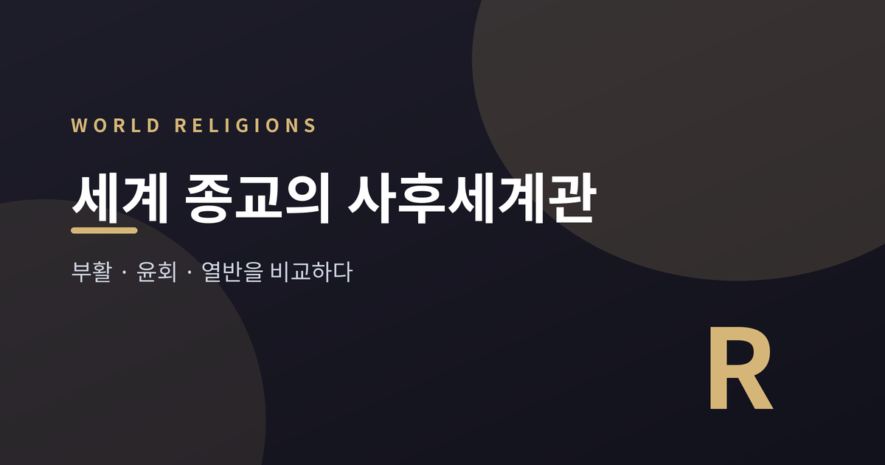
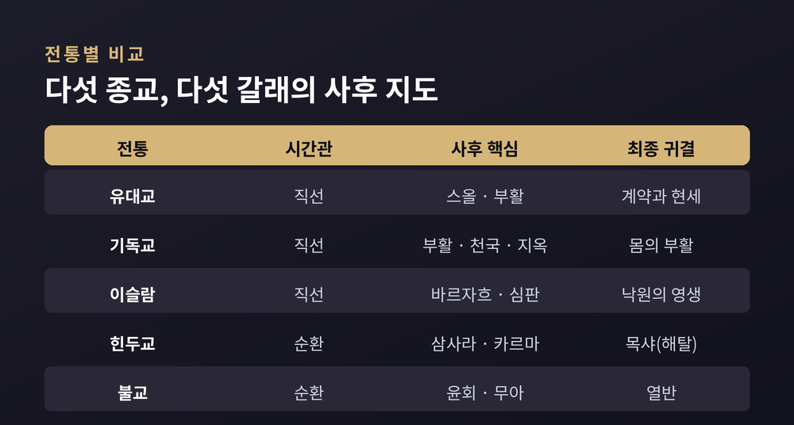
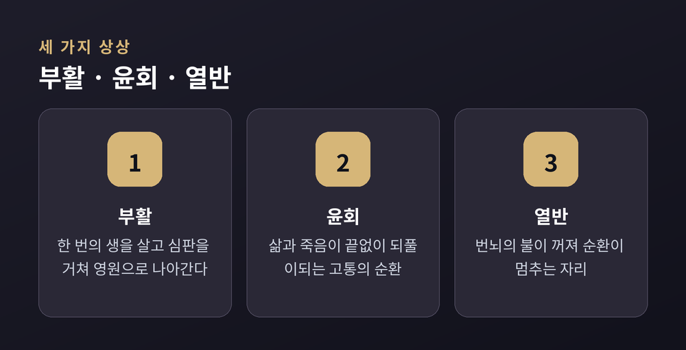
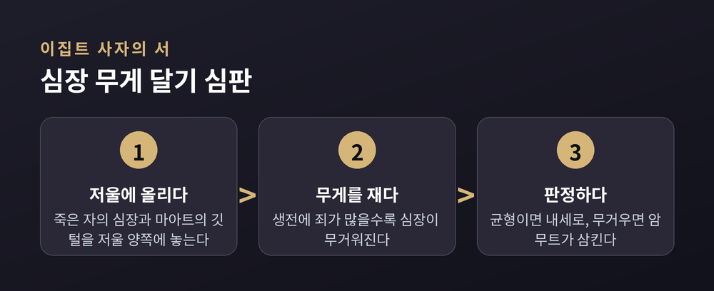
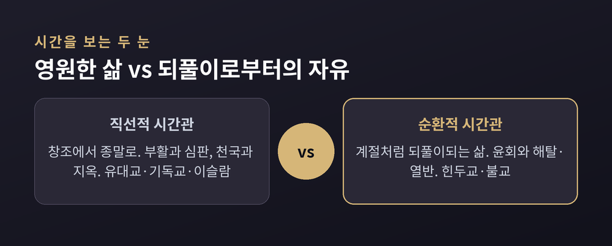

부활·윤회·열반을 비교하다

죽음 이후에 무엇이 있는가. 이 물음에 종교마다 다른 답을 내놓았습니다. 이번 글에서는 유대교·기독교·이슬람교, 그리고 힌두교와 불교가 그린 사후세계의 지도를 나란히 놓고 비교해 보겠습니다. 어느 한쪽의 손을 들어 주려는 글이 아닙니다. 각 전통이 스스로를 어떻게 이해했는지, 그 차이를 담담히 들여다보려 합니다.
사후세계관을 가르는 가장 큰 기준은 뜻밖에도 '시간을 어떻게 보느냐'입니다.
한쪽은 직선적 시간관입니다. 세계에 시작이 있고 끝이 있습니다. 창조에서 종말로, 그 끝에 최후의 심판과 부활이 놓입니다. 유대교·기독교·이슬람교 같은 아브라함 계열의 일신교가 여기에 섭니다.
다른 한쪽은 순환적 시간관입니다. 계절이 돌아오듯 삶과 죽음이 끝없이 되풀이됩니다. 힌두교와 불교가 그린 세계가 그렇습니다.
이 차이가 사후의 풍경을 갈라놓습니다. 일신교는 천국과 지옥, 그리고 부활을 이야기합니다. 인도에서 자란 종교들은 윤회와 그로부터의 벗어남, 곧 해탈과 열반을 이야기합니다. 예전 사람들은 순환하는 자연 속에서 시간을 읽었고, 뒤에 등장한 일신교는 시간을 한 방향으로 흐르는 강처럼 보았습니다.
유대교의 출발점은 의외로 조용합니다. 가장 오래된 경전인 토라는 죽음 이후의 삶을 거의 말하지 않습니다.
죽은 자는 선한 사람이든 악한 사람이든 구별 없이 '스올(Sheol)'에 머문다고 여겼습니다. 스올은 벌을 주는 지옥이 아닙니다. 인류가 공통으로 내려가는 어둑한 무덤, 의식이 흐릿한 그늘의 자리에 가깝습니다.
부활에 대한 믿음은 뒤에 자라났습니다. 그리고 유대교 안에서도 의견이 갈렸습니다. 바리새파는 의로운 이가 되살아난다고 가르쳤고, 사두개파는 영혼이 육체와 함께 죽는다며 부활을 인정하지 않았습니다.
오늘날에도 유대교는 내세보다 현세의 삶, 곧 신과 맺은 계약을 지키는 일에 무게를 둡니다. 부활과 내세를 어떻게 볼지는 정통파·보수파·개혁파에 따라 폭이 넓습니다.
기독교는 유대교의 부활 신앙을 이어받았습니다. 다만 예수의 부활을 한복판에 두고, 몸의 부활과 최후의 심판, 천국과 지옥의 영원한 삶을 핵심으로 삼습니다.
흥미로운 지점은 죽음과 최후의 부활 사이입니다. 그 사이 영혼이 어떤 상태로 있는지를 신학에서는 '중간 상태'라 부르는데, 여기서 교파가 갈립니다.
가톨릭은 죽은 뒤의 목적지를 셋으로 봅니다. 천국과 지옥, 그리고 연옥입니다. 연옥은 가벼운 죄가 남은 영혼이 정화를 거치는 임시의 자리로, 완전한 행복을 향한 희망을 간직한 곳으로 설명됩니다.
개신교는 다릅니다. '오직 성경'이라는 원칙에 따라 연옥을 인정하지 않습니다. 천국과 지옥은 받아들이되, 부르는 말과 강조점이 다릅니다.
정교회는 또 다른 결을 지닙니다. 연옥을 교리로 체계화하지는 않지만, 죽은 이를 위해 기도를 드립니다. 어떤 중간 상태는 인정하되 가톨릭처럼 제도로 굳히지 않고, 중간 상태를 아예 부정하는 개신교와도 거리를 둡니다.
같은 뿌리에서 갈라진 세 갈래가 죽음 이후의 한 장면을 서로 다르게 그리고 있는 셈입니다.

이슬람에서 죽음은 끝이 아니라 영원한 삶의 시작입니다. 육체가 멈추는 순간, 영혼은 생전의 기억을 지닌 채 몸을 빠져나온다고 봅니다.
죽음과 최후의 심판 사이에는 '바르자흐(Barzakh)'라는 경계의 세계가 있습니다. 심판의 날까지 영혼이 머무는 장벽 같은 기간으로, 일신교가 공유하는 '중간 상태'의 이슬람식 표현이라 할 수 있습니다.
심판의 날이 오면 모든 이가 되살아나 자신의 행위를 낱낱이 헤아림받습니다. 악한 행위가 선한 행위보다 무거우면 지옥으로 향한다고 믿습니다.
낙원(알 잔나)의 묘사는 매우 구체적입니다. 낙원에 든 이들은 나이가 서른셋으로 통일되고 지루함을 느끼지 않는다고 전합니다.
지옥(자한남)은 일곱 층으로 되어 있어 아래로 갈수록 고통이 커집니다. 다만 이곳을 단순한 형벌의 장소로만 보지 않고, 죄로 더럽혀진 영혼을 씻어 내는 정화의 자리로 해석하는 시각도 있습니다. 가장 낮은 나락에 떨어진 죄인만은 다시 구원받지 못한다고 봅니다.
인도로 눈을 돌리면 풍경이 완전히 달라집니다.
힌두교의 핵심에는 삼사라(Samsara), 곧 윤회가 있습니다. 해탈에 이르지 못한 존재는 깨달음에 다다를 때까지 이 세상에 몇 번이고 다시 태어납니다. 삶과 죽음이 끝없이 이어지는 이 순환을, 힌두교는 축복이 아니라 벗어나야 할 '고통의 순환'으로 봅니다.
이 수레바퀴를 굴리는 힘이 카르마(Karma), 곧 업입니다. 업은 행위에 따라 작동하는 우주의 인과법칙입니다. 선한 업을 쌓으면 다음 생에 더 존귀한 존재로, 악한 업을 쌓으면 더 미천한 존재로 태어난다고 봅니다.
그렇다면 목표는 무엇인가. 목샤(Moksha), 곧 해탈입니다. 윤회의 사슬을 끊고 완전한 자유와 지복에 이르는 것입니다. 명상과 사색을 통해 브라흐만과 하나가 되는 경지로 그려집니다.
여기서 눈여겨볼 대목이 있습니다. 힌두교는 윤회의 주체, 곧 옮겨 다니는 영혼(아트만)이 있다고 봅니다. 바로 이 지점에서 불교와 길이 갈립니다.

불교도 윤회를 말합니다. 수레바퀴가 멈추지 않고 도는 것처럼, 중생은 번뇌와 업으로 여섯 세계를 오가며 나고 죽기를 되풀이합니다. 지옥도·아귀도·축생도·아수라도·인간도·천상도, 이 여섯을 육도라 부릅니다.
그런데 불교는 힌두교와 결정적으로 갈라섭니다. 바로 무아(無我)입니다.
정신도 물질도 끊임없이 변하므로, 고정불변한 '나'라는 실체는 없다고 봅니다. 붓다는 영원한 자아라는 관념을 정면으로 비판했습니다.
여기서 오래된 물음이 생깁니다. 고정된 나가 없다면, 대체 무엇이 다시 태어나는가.
주류의 답은 이렇습니다. 옮겨 가는 것은 영혼이 아니라 업과 성향의 흐름이라는 것입니다. 촛불이 다른 초로 옮겨붙듯, 실체가 건너가는 것이 아니라 원인과 결과로 이어진 흐름이 계속됩니다. 그래서 불교의 다시 태어남은 영혼이 옮겨 가는 '환생'과 구별해 '재생'이라 옮기기도 합니다.
물론 불교 안에도 이견은 있습니다. 무아를 철저히 깨치면 윤회 자체가 성립하지 않는다는 해석도 오래 이어져 왔습니다. 하나로 단정하기 어려운, 살아 있는 논쟁입니다.
이 순환의 끝에 열반(涅槃)이 있습니다. 열반은 탐욕과 성냄과 어리석음이라는 '불'이 꺼진 상태입니다. 죽음도 아니고 텅 빈 무(無)도 아닙니다. 번뇌가 사그라들어 괴로움의 수레바퀴가 비로소 멈추는 자리입니다.
시야를 더 먼 과거로 넓히면, 고대 이집트가 남긴 장면 하나가 떠오릅니다.
관 속 미라와 함께 묻은 '사자의 서'는 죽은 이가 내세로 가는 여정을 돕는 안내서였습니다. 그 여정의 마지막에 심장 무게를 다는 재판이 있었습니다.
심판관 오시리스 앞에서, 저울 한쪽에 죽은 자의 심장을, 다른 쪽에 정의의 여신 마아트의 깃털을 올립니다. 죄가 많을수록 심장은 무거워집니다. 저울이 균형을 이루면 선한 삶으로 인정받아 내세로 나아갔고, 심장이 더 무거우면 괴물 암무트가 그것을 삼켜 버렸습니다.
행위를 저울에 달아 심판한다는 이 오래된 상상은, 훗날 일신교가 그린 최후의 심판과 묘하게 닮아 있습니다.


정리하면 이렇습니다.
일신교는 한 번뿐인 생을 살고 부활과 심판을 거쳐 영원으로 나아간다고 보았습니다. 인도의 종교들은 수없이 되돌아오는 삶에서 벗어나는 것을 구원이라 불렀습니다. 한쪽이 '영원한 삶'을 바랐다면, 다른 한쪽은 '되풀이되는 삶으로부터의 자유'를 바란 셈입니다.
어느 지도가 옳은지는 이 글이 답할 수 있는 물음이 아닙니다. 다만 분명한 것은 하나입니다.
"죽음을 어떻게 그리느냐가, 삶을 어떻게 살 것인가를 되비춘다."
죽음 너머의 지도는 결국 오늘을 살아가는 사람의 얼굴을 하고 있는지도 모르겠습니다.